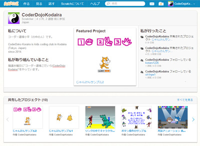

概要
このページは、CoderDojoの運営のための資料室です。
ワークショップ運営用の資料であると同時に、学習資料にもなればと思って作成しました。
内容は各種参考文献を基に、独自に再構成しています。
問題集は、色々な方法を試してみて欲しいことと、友達同士で考えながら取り組んで欲しいという意図があるので解答を用意していません。
独習ないしCoderDojo以外のプログラミングワークショップでもご活用頂けたら幸いです。
CC-BYで公開しているので営利目的での利用も全く問題ありませんが、折角ならフィードバックを頂きたい所存です。
また、これらはGitHubで公開しており、pull requestを歓迎しています（直通リンク）。
追加で参加者用の課題を作成する場合は、_sample.html をテンプレート代わりに活用して頂けると幸いです。
学習資料一覧
Scratch
はじめに
問題集
- 猫逃げ ←超基本
- 猫叩き ←基本
- シューティングゲーム ←基本を理解してから
- ブロック崩し ←基本を理解してから
そのほかの学習用資料
- Scratchカード←ブロックの使い方を見よう見まねで練習したいときに。(※外部リンク)
- 小平DojoのScratchユーザページ
サンプルとニンジャやメンターの作品を公開しています。
運営資料
- 猫歩き・猫逃げ ワークショップ資料
- 猫叩き ワークショップ資料
- シューティングゲーム
- ブロック崩し
- Scratch Tastic ←具体的なカリキュラムなど(外部サイト)
参考作品（Scratchプロジェクト）
- やさしいサンプル集（Scratch Studio）ねこ歩き、ねこ逃げ、ねこ叩き etc.
- Flappy Birds
- Super Mario Bros (version 9)
ScratchJr
（準備中）
Blockly（Blockly Games）
はじめに
Viscuit
（準備中）
Code.org
はじめに
App Inventor
（準備中）
HTML(5)/CSS(3)
HTML
（準備中）
その他
ニンジャ向け
- Chrome用ブックマーク
Dojoの貸出し用PCに入っているブックマークを公開しています（一部非公開のものもあります）。 - Hour of Code 2015 イベント配付資料
2015年12月12日に開催したイベントで配付した資料です(アンプラグドの資料とニンジャ限定資料は非公開)。使用ツールなどの参考にどうぞ。
保護者向け
メンター、ボランティア向け
引用および参考文献
更新履歴
- 2015.1.30: Scratch：問題3〜5、ワークショップ資料（4,5）を追加。
- 2015.1.23: 参加者と運営用の資料を縦割りに整理。
- 2015.1.17: 新規作成